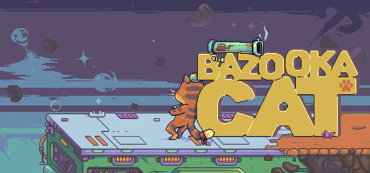

Доступна в Steam↗Bazooka Cat:
First Episode
Тактический двухмерный платформер о коте Лаки — космическом ветеране с любимой базукой.
Дух платформеров девяностых, пиксельная графика, исследование инопланетного мира и боссы, которых нельзя победить одним только быстрым нажатием кнопок.
20достижений
3языка
PCWindows / Linux
Мой вклад
Открыть в Steam ↗
Участие в разработке Unity-проекта в составе команды и доведение игры до коммерческого релиза.